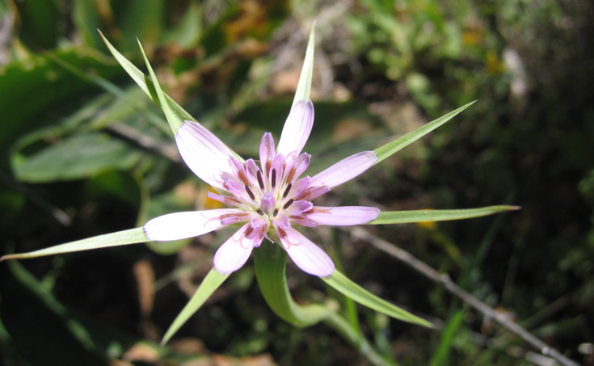
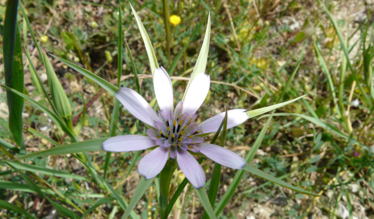
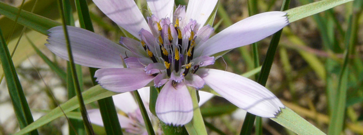
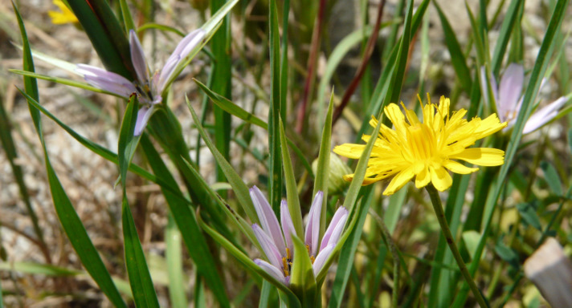
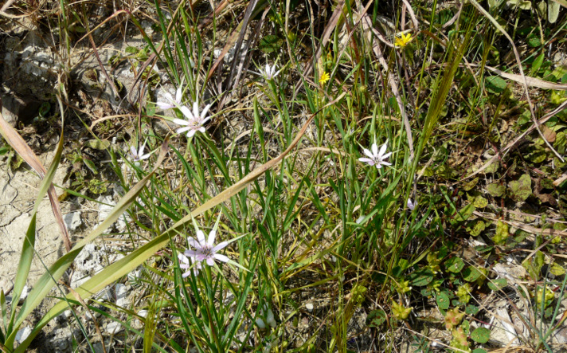
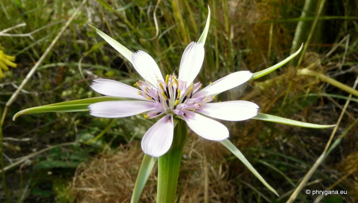

| PHRYGANA | Fauna | Flora |
additions nouveautés |
espèces species |
contact -
info - commentaires phrygana1 (at) gmail.com |
| diversité crétoise -- Cretan diversity | |||||
| Geropogon hybridus (L.) SCH. BIP. |
| 149 | Flora | ASTERACEAE | Chicorieae CASS. | Geropogon L. |
 Geropogon hybridus Melambes (Agios Giorgos) 06 avril 2008 |
| Synonyme: Tragopogon hybridus L. | |
| fr: le Salsifis glabre | |
| Plante glabre | |
| Feuilles: longues, linéaires acuminées (60 -80 mm x 3 mm) | |
| Fleurs: capitule large de 30 à 50 mm. Involucre à 8 folioles linéaires 2 - 3 fois plus long que les fleurs ligulées roses à rose violacé. Pédoncule resserré sous le capitule. | |
| Fruit: akène filiforme, strié terminé en un bec hérissé. Akènes du centre surmontés de soies plumeuses, ceux de la périphérie de soies simples. | |
| Hauteur: 20 - 80 cm | Type biologique: thérophyte |
| Floraison: mars avril mai juin juillet | |
| Altitudes: 0 – 850 m | |
| Statut en Crète: indigène -- native | |
| Biotopes en Crète: phryganas, olivaies, bords des routes, terrains vagues, champs abandonnés, terrains secs rocailleux. | |
| Distribution: région Méditerranéenne | |
|
 Geropogon hybridus Melambes (Agios Giorgos) 23 mars 2010 |
|
 Geropogon hybridus Melambes (Agios Giorgos) 23 mars 2010 |
 Geropogon hybridus Melambes (Agios Giorgos) 23 mars 2010 |
 Geropogon hybridus Melambes (Agios Giorgos) 23 mars 2010 |
|
 Geropogon hybridus Melambes (Agios Giorgos) 13 avril 2011 |
| 13 septembre 2011 |
| © paul fontaine -- © Phrygana.eu 2007 -- 2013 |